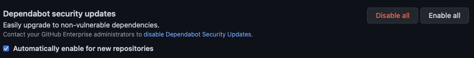
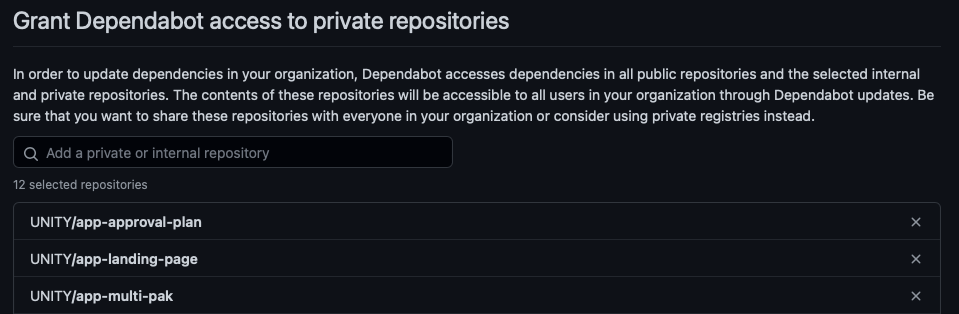

Table of Contents
Regular Activities
There are some tasks, which must be executed by the UNITY team on a regular basis, as these cannot be fully automated.
Update Quarkus Version
The create-quarkus-app.bash contains instructions from Bootstrapping the project The version will be bumped by dependabot when a new version is available. The pull requests from dependabot need to be reviewed, merged and the workflow should be tested afterwards.
Update Angular Version
The create-angular-app.bash contains a variable for the current Angular major version to use:
ANGULAR_VERSION: '16'
As soon as a new major angular version is release, which can be found e.g. on angular-cli release it should be bumped to that new major version. In addition, dependencies like @bmw-ds/components@latest need to be checked to be compatible with the new Angular major version.
Enable Dependabot on All Repos
Currently, there is no API to provide dependabot access to a new private repository. That means, dependabot cannot be granted access to dependabot on repository creation. Instead, the “Enable All” button on Dependabot security updates should be clicked.

In the end, all private repositories should be listed under “Grant Dependabot access to private repositories”.

Certificates
To keep the trust store up to date, any new certificate published on Root and Intermediate Certificates must be added to bmw-certificates and released as new chart version. All charts depending on bmw-certificates need to be updated and bumped as well. Search for org:UNITY filename:Chart.yaml bmw-certificates to find all places.